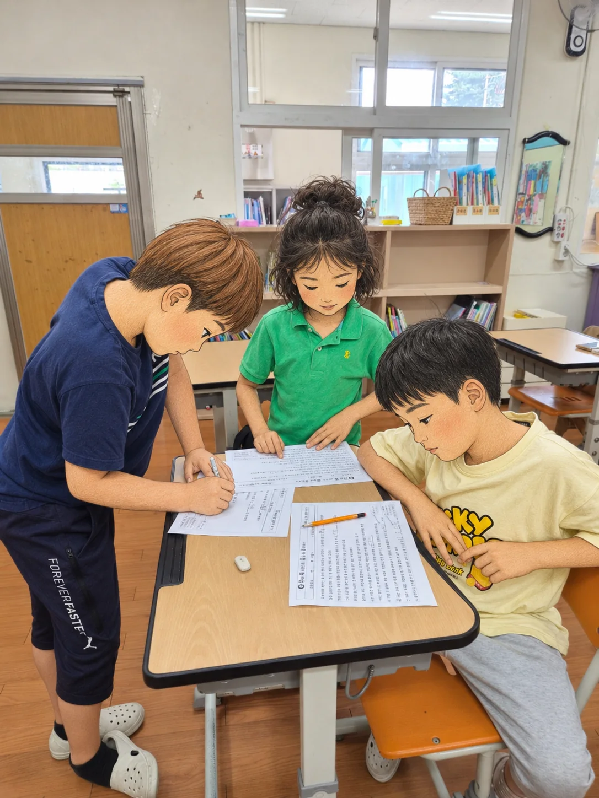
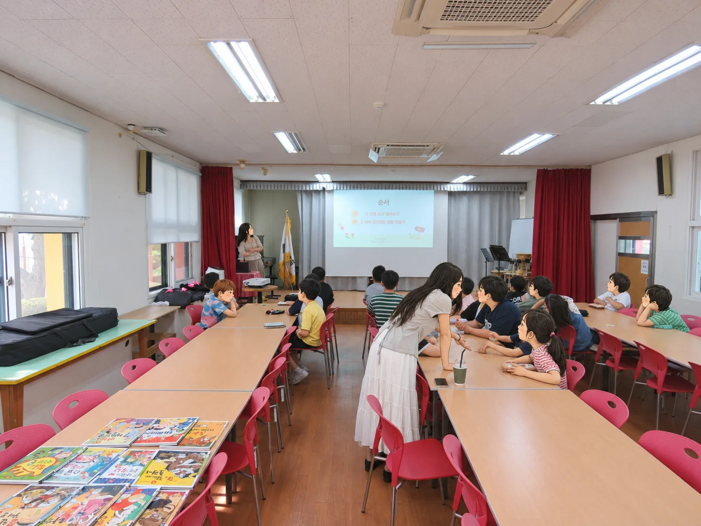
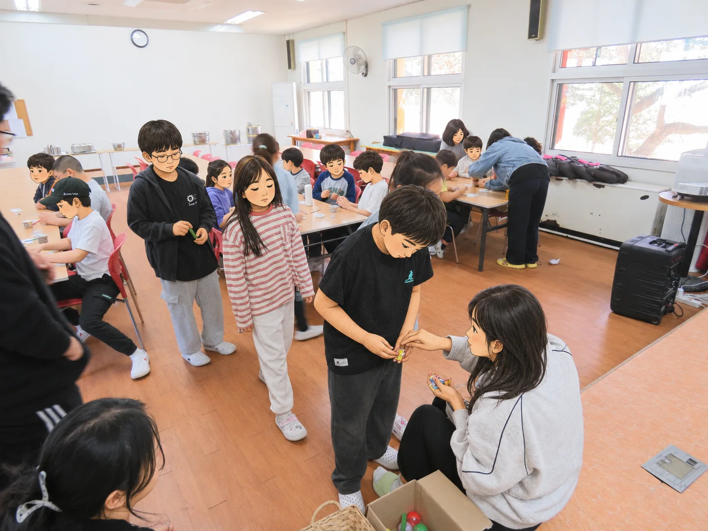

기초학력 향상교육

1:1 눈높이에 맞춘 한글 해득
담임선생님과 함께하는 교과 보충
학습 상담을 통한 기초학력 보장
한 글자씩 읽는 힘에서, 생각을 나누는 기쁨까지
한 글자씩 익히는 시간부터 책 속에서 새로운 세상을 만나는 순간까지. 양덕분교의 배움에는 교과 공부뿐 아니라 친구들과 생각을 나누고 생활 속 경제를 경험하는 활동도 담겨 있습니다.

이런 활동을 만날 수 있어요



※ 이곳은 학부모가 자율적으로 만든 비공식 소개 공간입니다. 실제 활동 내용과 일정은 학년도 및 운영 상황에 따라 달라질 수 있습니다.